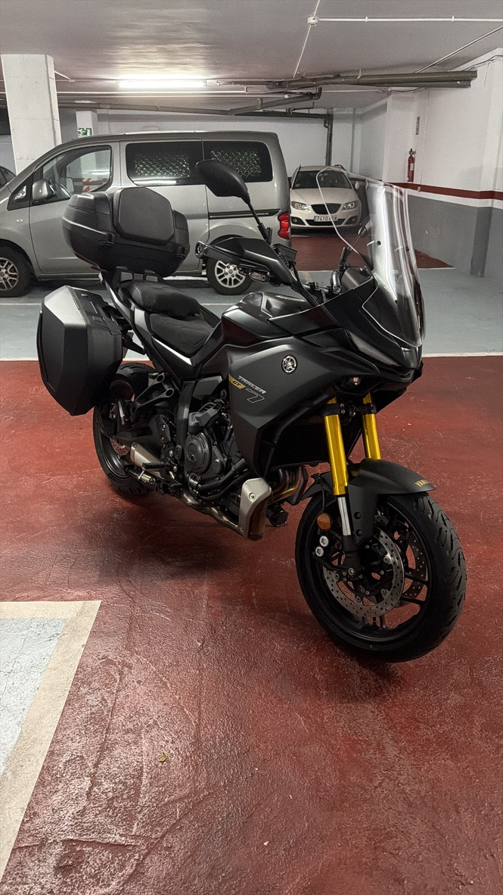
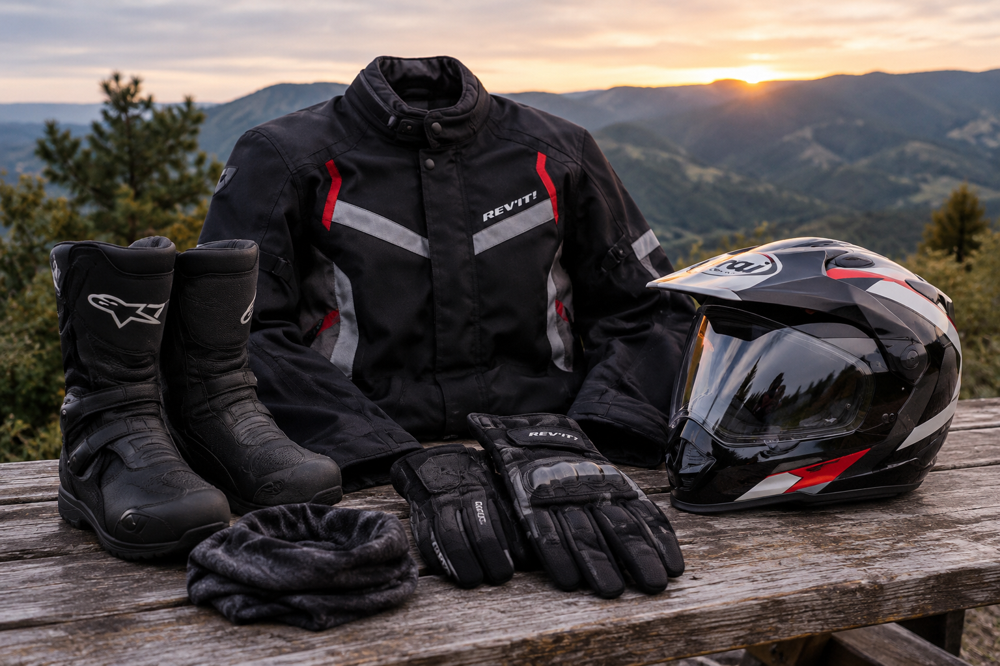
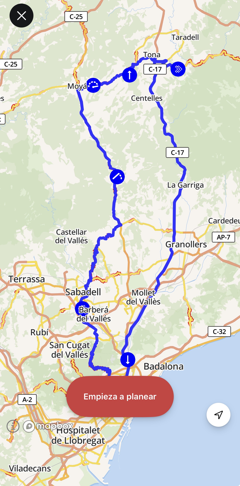

Mi experiencia con la BMW F800GS

Mi experiencia personal con la conducción de la BMW F800GS, una moto trail para el dia a dia y rutas.
Leer másEl blog de los moteros, compartir experiencias y tips para otros moteros
Un espacio dedicado a los amantes de las motos, donde compartir experiencias, consejos de conducción, equipación motera y rutas sobre dos ruedas.

Mira nuestras publicaciones
Mi experiencia personal con la conducción de la BMW F800GS, una moto trail para el dia a dia y rutas.
Leer más
Descubre mi equipación del dia a dia.
Leer más
Descubre mi última ruta del domingo.
Leer másMe gustan las motos pero tampoco es que sea un experto, pero he escogido este tema para hacer el blog del trabajo de la asignatura.
He creado KurviBlog para aprobar la practica de la asignatura y para aprender a crear un blog como mi primera experiencia en el mundo del desarrollo web.